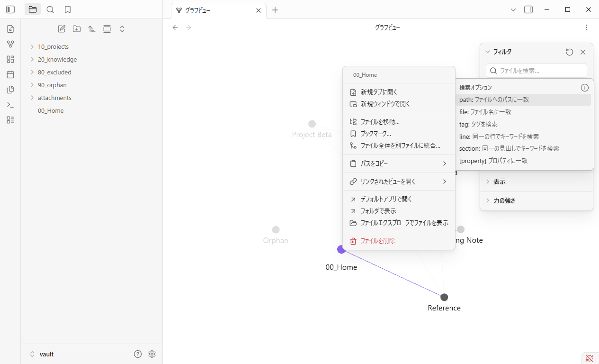
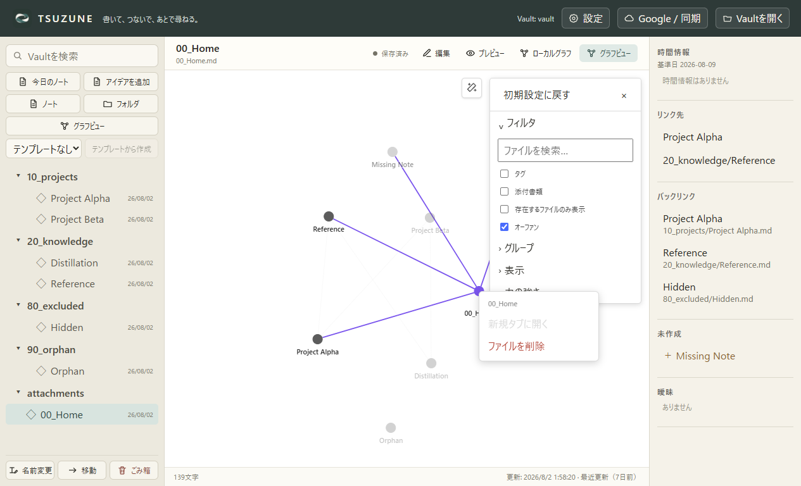

GP0-3b-e · 固定実機比較
右クリックメニューは、まだ同じではない。
Obsidian Desktop 1.13.4とTSUZUNEを同じfixture、Global Graph、1265×768、DPR 1、ライトテーマで比較しました。
different: TSUZUNE 2操作 / Obsidian 11操作
画面証拠


比較
| 確認項目 | Obsidian | TSUZUNE | 判定 |
|---|---|---|---|
| 対象nodeラベル | 00_Home | 00_Home | matched |
| 操作項目数（ラベルを除く） | 11 | 2 | different |
| 操作名と順序 | ["新規タブに開く","新規ウィンドウで開く","ファイルを移動…","ブックマーク…","ファイル全体を別ファイルに統合…","パスをコピー","リンクされたビューを開く","デフォルトアプリで開く","フォルダで表示","ファイルエクスプローラでファイルを表示","ファイルを削除"] | ["新規タブに開く","ファイルを削除"] | different |
| 先頭操作の文言 | 新規タブに開く | 新規タブに開く | matched |
| 先頭操作の有効状態 | true | false | different |
| 削除操作の文言と有効状態 | {"index":11,"text":"ファイルを削除","disabled":false,"classes":["is-warning","menu-item","tappable"]} | {"index":1,"text":"ファイルを削除","disabled":false,"classes":["is-danger"]} | matched |
今回の最小修正
先頭操作の文言だけを「新規タブに開く」へ一致させました。残りの操作や無効状態を未実装のまま一致扱いにはしていません。
未証明: attachment／tag／unresolved nodeの実機menu、物理マウス、完全な見た目、残る9操作とsubmenu、実際の新規タブ生成。